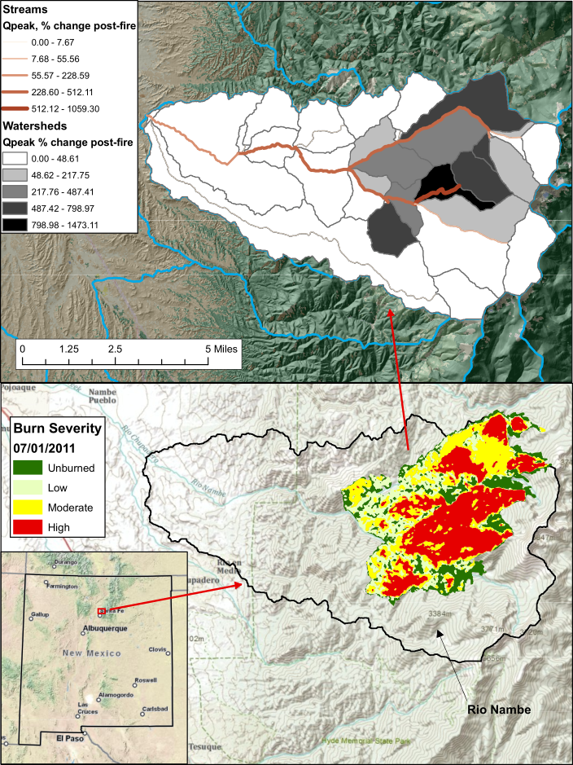

Another project that I was involved with while at the ARS was training the Burned Area Emergency Response (BAER) Team in how to use AGWA to predict which burned areas were at hsigest risk of flooding due to vegetation loss. The BAER team is deployed often right after a wildfire has been contained to help stabilize and restore some of the landscapes that experienced high severity burns. Areas that lose vegetative cover are more prone to runoff which can lead to downstream flooding that can affect human populations. The AGWA toolkit can provide a quick analysis of which areas have the greatest risk of flooding giving the BAER team a better idea of where their restoration efforts can have the greatest impact.
The typical workflow is take Burned Area Reflectance Classification (BARC) maps that show a satellite-derived data layer of post-fire vegetation condition and overlay these on the AGWA landcover classification. AGWA's landcover modification tool is then used to reclassify the areas with high severity burn conditions as having bare soil conditions. The KiNEROS model is then ran with both pre- and post-fire landcover conditions to give a percent change for each watershed and stream element. These results are then classified and displayed in the map view with the percent change being reflected using color ramps and line widths. This gives a pretty good picture of which areas have the greatest potential for flood should a rain event occur following the fire.
My involvement with BAER included performing this analysis on two seperate occasions. The first was on the Monument Fire in the Lower Huachuca Mountains that broke out in June of 2011 and the second was the Pacheco Fire which broke out in the Santa Fe National Forest in New Mexico in July of 2011. I was also part of a team of Hydrologists and Developers that helped deliever a 3-day hands-on AGWA training to BAER team members in Española, New Mexico in April of 2012. Working with BAER was really fulfilling because you you're part of a team that are really helping people to avoid the impacts from fire related flash flood events.
